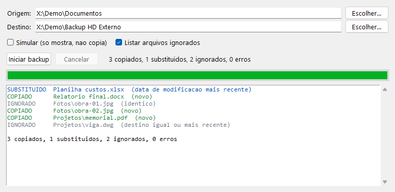

Como ele decide
-
O arquivo não existe no destino
É copiado.
-
O conteúdo é idêntico
Não faz nada, mesmo que a data seja diferente. A comparação é byte a byte.
-
Os dois têm número de versão
Programas e bibliotecas (
.exe,.dll...) trazem a versão gravada no arquivo. Se forem diferentes, só substitui quando a versão da origem for maior, seja qual for a data. -
Nos demais arquivos
Compara a data de modificação e só substitui quando a da origem for mais recente.
O que aparece no log
| Ação | Quando |
|---|---|
| COPIADO | Arquivo novo, que ainda não existia no destino |
| SUBSTITUIDO | A origem tinha versão maior ou data mais recente |
| IGNORADO | Idêntico, ou o destino já estava igual ou mais atualizado |
Como usar
- Abra o
Backup.exe. - Em Origem, escolha a pasta que você quer guardar.
- Em Destino, escolha onde vai a cópia (um HD externo, pendrive, outra pasta).
- Se quiser ver antes o que vai acontecer, marque Simular: nada é gravado.
- Clique em Iniciar backup. Dá para cancelar no meio.
Detalhes que evitam surpresa
Rodar de novo é rápido
A cópia mantém a data original do arquivo, então na próxima vez só vai o que mudou.
Pendrive e HD externo
Diferença de até 2 segundos na data conta como igual. Discos FAT/exFAT gravam a hora com essa precisão.
Sem cópia dentro de si mesma
O destino não pode estar dentro da origem, nem o contrário, para não entrar em laço.
Nunca apaga nada
Arquivos que só existem no destino ficam onde estão. O programa só copia e substitui.
Para quem quer mexer no código
A regra de decisão fica em backup.py, separada da janela (app.py, em Tkinter),
e é coberta por testes unitários. A versão dos executáveis é lida pela API de versão do próprio Windows.
python app.py rem roda sem compilar python -m unittest discover -s tests -v rem testes build.bat rem testa e gera o Backup.exe